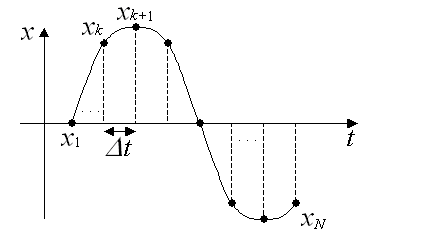
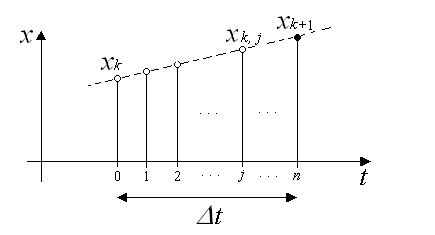

10. Interpolation
The GPF-3100 provides the interpolation capability to reduce quantization error by the analog-to-digital conversion. This product adopts the linear interpolation. This product adopts the linear interpolation. When an interpolation parameter n is given, new data of (n-1) points are generated between two data sampled from a source waveform. Where we assume that the sampled source waveform described by a series of data xk (k = 1, 2, . . . , N), (N is the number of data that consist of the source waveform sampled), new points of data xk, 0 (= xk), xk, 1 xk, 2, . . , xk, j, . . . , xk, n (= xk+1) between xk and xk+1 are calculated as follows: As a result, the sampling rate of the new waveform results in n-times that of the source waveform. The new waveform consists of (Nn - n + 1) points of data. When you use the AdDataConv function, specify AD_CONV_SMOOTH and n for uEffect and uCount, respectively. 

© 2000, 2013 Interface Corporation. All rights reserved.
[Top]